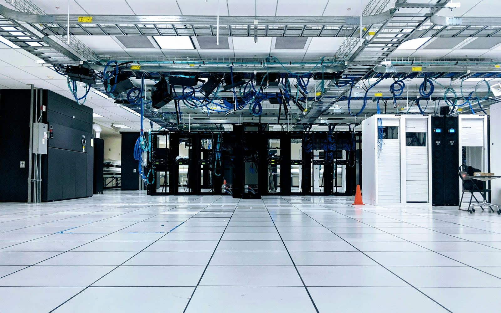
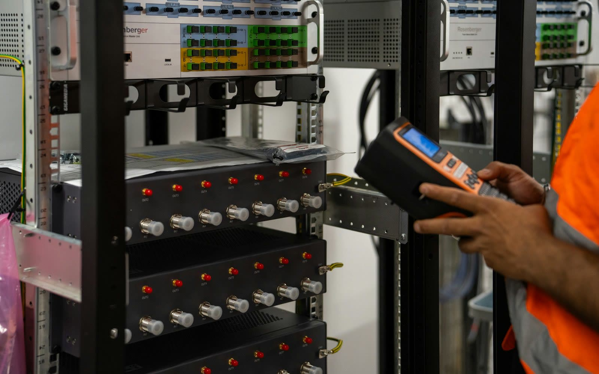
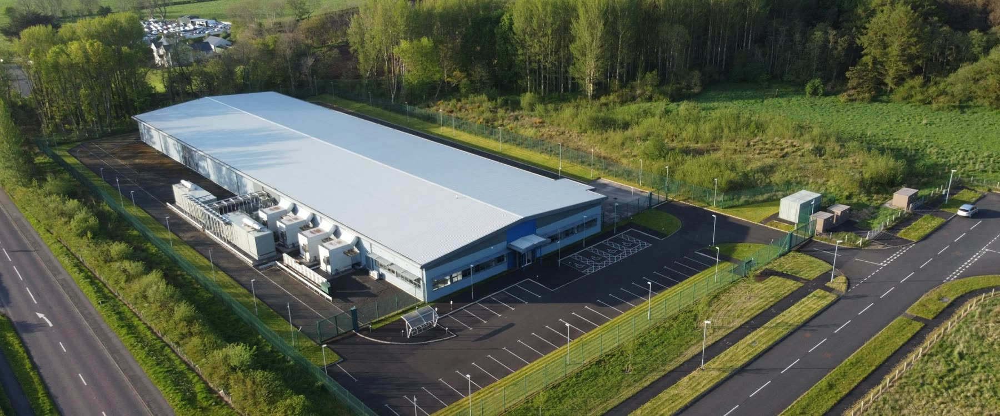

The challenge
The problem is trust.
Infrastructure leaders are responsible for keeping the data center estate accurate, scalable, compliant, and ready for every business demand. But most teams still depend on fragmented spreadsheets, outdated rack diagrams, manual audits, and scattered site reports.
Modern infrastructure teams manage hundreds or thousands of assets across multiple rooms, floors, and sites. Every rack contains critical details: servers, switches, patch panels, PDUs, storage devices, ports, serial numbers, labels, and cable connections.
Most inventory records become outdated the moment equipment is moved, replaced, patched, or decommissioned. A small change inside one rack can create confusion across capacity planning, compliance reviews, budgeting, incident response, and audits. When leadership asks, “What do we actually have?”, teams often need days or weeks to confirm the truth.

What RackTrack does
Rack reality becomes structured intelligence.
Instead of manually checking every rack and updating multiple systems, teams can capture a single rack image or video. RackTrack analyzes the physical rack and identifies key infrastructure components, including servers, switches, routers, firewalls, patch panels, storage devices, PDUs, load balancers, controllers, rack units, ports, labels, LED status, cables, vendor models, and serial numbers.
This scanned data is then transformed into a clean, searchable source of truth that can be used by network, infrastructure, security, compliance, and operations teams.

Example scenario
A faster refresh across multiple sites.
A global company is preparing for a major infrastructure refresh across multiple data center sites. Before RackTrack, the team would depend on site engineers to manually inspect racks, update spreadsheets, take photos, compare diagrams, and report back — a process that could take weeks.
With RackTrack, each site team scans the racks. RackTrack identifies the visible infrastructure, highlights mismatches, and creates a structured view of the rack environment. Leadership can now compare every site using the same data format. The result: faster planning, fewer surprises, and a stronger business case for infrastructure investment.

When leadership asks, “What do we actually have?”, teams often need days or weeks to confirm the truth.
How RackTrack works
From scan to report.
- CaptureA technician records a rack using a mobile device or uploads rack images from the site.
- DetectRackTrack identifies components, rack positions, ports, labels, and device types.
- ReconcileDetected data is compared with CMDB records, switch telemetry, and diagrams.
- VerifyTeams review output, confirm accuracy, and flag missing or mismatched items.
- ReportRack-level visibility becomes reports for planning, compliance, and budgeting.
Business impact
RackTrack is designed to reduce the time and effort required to understand physical infrastructure. For infrastructure leaders, this means fewer manual audits, fewer data quality debates, and faster decision-making. When every site, row, and rack is aligned to one trusted source of truth, teams can plan faster, respond better, and scale with confidence.